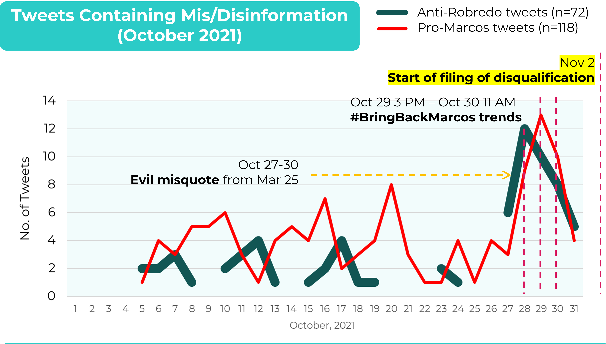

DISCUSSION
Anti-Robredo and Pro-Marcos Tweets
Comparison of anti-Robredo tweets and pro-Marcos tweets from January, 2019 to December, 2022 showed similar trends, particularly in the increase of tweet count within the election period (October, 2021 to May, 2022). (See Note 1 for explanation about the source of this data). Although the personalities involved are polar opposites in terms of their political positions and background, this implies that the two sets of tweets are intended for the same purpose.

October, 2021 Change-point
The identified October, 2021 change-point (from Robredo misquote tweets and likes) coincides with the month of filing of Certificate of Candidacy (COC) for the national elections. It should be noted that it was only on November 11, 2021, that Sara Duterte accepted to be Marcos Jr.’s vice-president (Reuters, 2021). So, from the time Marcos Jr. filed his candidacy until November, he was without a running mate, and was not visible.
In contrast, Robredo was already having interviews and was visiting strategic locations. Moreover, she actively monitored typhoon Maring and its aftermath in the middle of October, and had her Caravan of Hope on October 23 (Rappler.com, 2021a). The increase in tweets attacking Robredo and in tweets favoring Marcos can thus be interpreted as a strategy to minimize Robredo’s election gains during this period when Marcos Jr. was inactive.
Moreover, the misattributed statement used in the anti-Robredo tweets in October, 2021 was not taken from a recent event, but from an old quote card posted in the Lugaw Chronicles Facebook page on March 25, 2020 which said “Karamihan sa mga work from home na yan [sic] ay nasa bahay lang” (Lugaw Chronicles, 2020; Rappler.com, 2021b). This is an indication of a malicious intent to malign Robredo.

The motive is further supported by a close examination of the daily tweets trend in October, 2021.

As the “work from home” tweets ran from October 27 to 30, 2021, pro-Marcos tweets also followed a similar trend. From 3 P.M. of October 29, the hashtag BringBackMarcos started trending, with 81.6 thousand tweets. It peaked at top 2 of Philippine trends 11 A.M. of October 30, and was out of top 50 by 12 noon (GetDayTrends, 2022; Serafica, 2021). The #BringBackMarcos preceded the start of filing of election disqualification cases on November 2 (Antonio, 2021). It can be deduced that the tweets, both anti-Robredo and pro-Marcos, were timed in anticipation of the disqualification cases expected to be filed against Marcos, and intended to counter their impact by showing that Marcos had the support of many people.
December, 2021 Change-point
The number of tweets propagating Robredo misquotes decreased in December, 2021. By this month, Marcos Jr. already had a running mate and has started rolling his campaign activities. Interestingly, the number of Pro-Marcos tweets also decreased this month. From these information, it can be inferred that the necessity of attacking Robredo and propping up Marcos Jr. has temporarily ebbed since Marcos Jr. was already on the ground.
April, 2022 Change-point
April, 2022 again showed a sudden increase in the number of tweets with Robredo misquotes. In this month, the number of anti-Robredo tweets peaked. There are 2 possible explanations to this:
- Robredo was seen as the strongest rival of Marcos Jr. for presidency. She had been drawing large crowds to her rallies from March to April. She went as far north as Alcala, Cagayan (San Juan, 2022a), and Echague, Isabela (San Juan, 2022b), and reportedly had an estimated 76,000 attendees to her rally in Dagupan, Pangasinan (Cos, 2022), and 220,000 in San Fernando, Pampanga (Manabat, 2022), supposed Marcos Jr bailiwicks. Moreover, she gained support in Mindanao, as she was endorsed by Pantaleon Alvarez, once an ally of then President Rodrigo Duterte, on March 24 (Quismorio, 2022), and by the MILF on April 24 (CNN Philippines Staff, 2022). With her surging popularity and growing support, she was the natural target of online attacks.
- Because April is the month before the elections, escalation of propaganda was expected in this period.
Limitations of the Study
It was observed that a spike in Twitter misquote would usually involve only one misattributed statement at a time. Random verification showed that the same quote card was tweeted by several accounts, and such tweets became the source of disinformation. However, mapping of these tweets was not conducted due to limitations in data gathering. It is recommended that this be considered for further study.
Note 1:
- Data of the anti-Robredo tweets was taken from the combined data of the class, and includes tweets containing false information about Robredo’s statements, personal life, daughters, cheating in 2016 elections, vote buying, incompetence/corruption, and communism.
- Pro-Marcos tweets data was also from the combined data of the class, and includes tweets containing false information about Marcos Sr.’s regime, Marcos Jr.’s Oxford and Wharton diploma claims, and the Marcos family in general. The topics range from the Philippine “golden era”, food situation, corruption and human rights violations during Marcos Sr.’s rule; to the Marcos family’s wealth, cases, estate tax, and the Tallano gold.
- Date range of both datasets is from 2016 to 2022. Tweets with incorrect posted date format (which cannot be verified and corrected) were removed from the dataset: 29 anti-Robredo tweets and 2 pro-Marcos tweets.
- Only data from 2019 to 2022 are shown in the graphs.
References
Antonio, R. (30 November, 2021). Comelec, SC can determine if Bongbong Marcos' previous conviction disqualifies him --- Carpio. Manila Bulletin. https://mb.com.ph/2021/10/30/comelec-sc-can-determine-if-bongbong-marcos-previous-conviction-disqualifies-him-carpio/
CNN Philippines Staff (2022, April 23). Robredo gets historic endorsement from MILF party. CNN Philippines. https://www.cnnphilippines.com/news/2022/4/23/Leni-Robredo-MILF-United-Bangsamoro-Justice-Party.html
Cos, W. (2022, April 9). Robredo vows in Pangasinan to forget 'colors' and 'politicking' in first day as president. ABS-CBN News. https://news.abs-cbn.com/news/04/09/22/robredo-vows-to-forget-colors-and-politicking-as-president
GetDayTrends (2022, May 8). #BringBackMarcos in Philippines. https://getdaytrends.com/philippines/trend/%23BringBackMarcos/
Lugaw Chronicles (2020, March 25). Di ba puedeng sa lansangan na lang? [Image attached][Photo]. Facebook. https://www.facebook.com/LugawChronicles/photos/pb.100066857541068.-2207520000./116700666628207/?type=3
Manabat, J. (2022, April 9). 220,000 Kapampangans put on grand show for Leni-Kiko. Rappler. https://www.rappler.com/nation/elections/leni-robredo-kiko-pangilinan-pampanga-grand-rally-april-9-2022/
Quismorio, E. (2022, March 24). Who could've imagined? Ex-speaker Alvarez now backing Robredo’s Palace bid. Manila Bulletin. https://mb.com.ph/2022/03/24/ex-speaker-alvarez-now-backing-robredos-palace-bid/
Rappler.com (2021a, October 23). IN PHOTOS: Nationwide ‘Caravan of Hope’ for Leni-Kiko tandem. https://www.rappler.com/nation/elections/in-photos-national-proclamation-motorcade-leni-kiko-tandem-2022/
Rappler.com (2021b, November 3). FALSE: Robredo’s quote on Filipinos working from home. https://www.rappler.com/newsbreak/fact-check/robredo-quote-filipinos-working-from-home/
Reuters (11 November, 2021). Duterte’s daughter joins Marcos Jr. as running mate in Philippine presidential election. CNN World. https://edition.cnn.com/2021/11/16/asia/duterte-marcos-philippines-vice-presidency-intl-hnk/index.html
San Juan, A. D. (2022a, March 12). Robredo gains Ilocanos' support in Cagayan sortie; 'Awan ti Solid North!'. Manila Bulletin. https://mb.com.ph/2022/03/12/robredo-gains-ilocanos-support-in-cagayan-sortie-awan-ti-solid-north/
San Juan, A. D. (2022b, March 13). Crack in 'Solid North'? 10,000 crowd stands for Team Leni-Kiko in Cagayan, Isabela. Manila Bulletin. https://mb.com.ph/2022/03/12/crack-in-solid-north-10000-crowd-stands-for-team-leni-kiko-in-cagayan-isabela/
Serafica, R. (2021, November 1). #BreakTheTrend: Manipulado at pilit ang #BringBackMarcos. Rappler. https://www.rappler.com/moveph/break-the-trend-cheat-sheet-fight-disinformation-manipulated-forced-bring-back-marcos/
End of Page